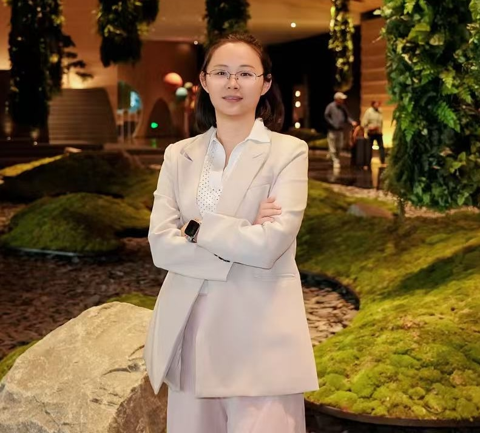

"Learning to Represent, decisoin-make, and Deploy"
Hailan Ma
Nanyang Quantum Hub, Nanyang Technological University, Singapore
I am Hailan Ma, currently a Schmidt AI in Science Postdoctoral Fellow at Nanyang Technological University. I received my PhD in Electrical Engineering from the University of New South Wales. My research explores machine learning for quantum systems. Broadly speaking, my work evolves along two directions: AI for Quantum, where I develop neural representations and reinforcement learning for quantum estimation, tomography, and compression; and more recently Quantum-inspired AI, which explores how quantum principles can inspire next-generation AI systems.
Research Focus
AI Meets Quantum to Science
- Representation makes quantum systems learnable: Compact quantum representation and reduced-order modeling make efficient reconstruction of quantum states and processes from limited measurements, reducing experimental complexity and improving the learnability of quantum systems.
- Decison enable quantum systems controllable: Reinforcement learning control and adaptive algorithms enable data-driven optimization of quantum dynamics under uncertainty, realizing robust autonomous control of complex quantum systems.
- Deployment renders quantum systems scalable: Robust quantum algorithms and scalable experiments redener resource-efficient implementation of quantum information processing, supporting practical deployment on real-world quantum hardware.
Quantum-Inspired Intelligent Agent
- Decision → Learning-efficient intelligent agents: Quantum reinforcement learning and quantum-aware policy models enable improved exploration, structured sample reuse, and adaptive decision-making under partial observability.
- Representation → Expressive AI systems: Quantum-inspired representation learning and quantum latent compression enable structured, compact neural representations that improve memory efficiency and modeling of uncertainty.
News
- 2026 Serving as the first organizer of the 2026 IEEE Systems, Man, and Cybernetics Society Summer School on Quantum Cybernetics and AI.
- 2025 Started as the Eric and Wendy Schmidt AI in Science Postdoctoral Fellow at the Nanyang Quantum Hub, NTU Singapore.
- 2025 Served as host and organizer of the qCCL 2025 Pre-Conference Workshop for Quantum Estimation and Control in Hong Kong.
- 2024 Received the Dean's Award for Outstanding PhD Thesis from UNSW.
- 2024 Received the Ria De Groot Prize for best performance by a female postgraduate from UNSW.
- 2024 Joined seminars and academic visits at NTU, the University of Melbourne, and the Academy of Mathematics and Systems Science, CAS.
Representative Publications
View all publications-
Machine Learning for Estimation and Control of Quantum SystemsNational Science Review, 2025. LinkThis paper addresses the lack of a unified view of learning-based quantum estimation and control, and helps clarify the field's main opportunities and practical impact.
-
Quantum autoencoders using mixed reference statesnpj Quantum Information, 2024. LinkThis paper fills a practical gap in quantum autoencoding by extending the framework beyond idealized pure-reference settings to more realistic mixed states.
-
Tomography of Quantum States from Structured Measurements via quantum-aware transformerIEEE Transactions on Cybernetics, 2025. LinkIt tackles the gap between transformer models and structured quantum measurements, showing improved state reconstruction in constrained settings.
-
Curriculum-based deep reinforcement learning for quantum controlIEEE Transactions on Neural Networks and Learning Systems, 2023. LinkIt addresses unstable learning in difficult quantum-control tasks and shows how curriculum design can improve convergence and performance.
-
On compression rate of quantum autoencoders: Control design, numerical and experimental realizationAutomatica, 2023. LinkIt fills a gap between theory and experiment in quantum compression by combining control design, numerical study, and experimental realization.